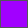
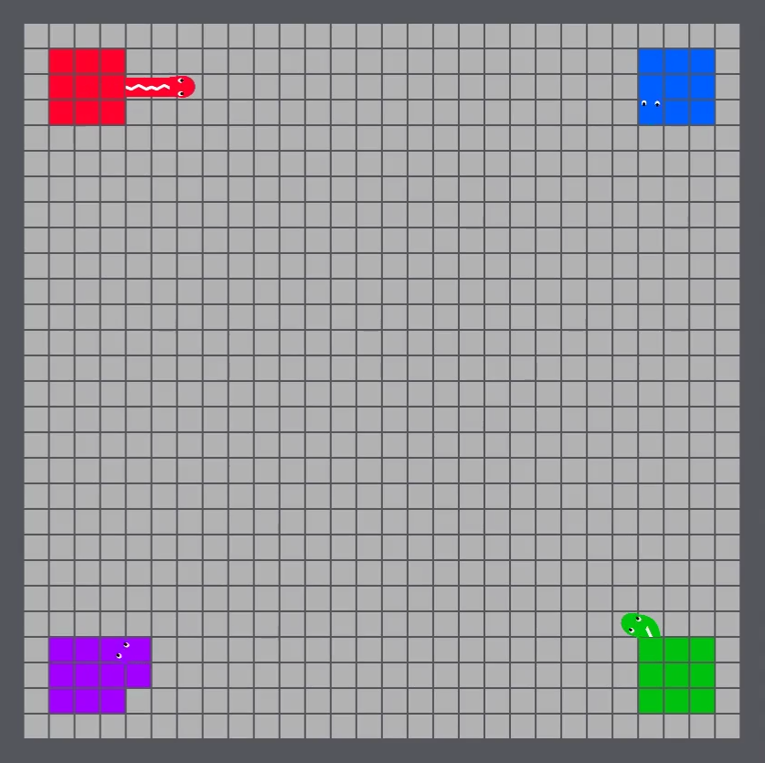

Game Introduction¶
{kind=link}
Core Rules
The game is very straightforward to understand, but difficult to master! These core rules give enough information to get started, but you can scroll down for more detailed information.
Objective: Expand your territory on a tile-based board.
- Each tile on the board represents territory, and 1 tile = 1 point.
- Each team starts with a 3 by 3 grid territory on the map.
- Team with the highest score at the end of 300 turns wins!
Unit: Each team controls a single snake agent.
- The snake agent can move to any of the four directly adjacent tiles.
- Once the snake agent leaves its territory, its body starts growing (following its path).
- When the snake agent returns to its territory, the body disappears.
Territory Acquisition: Acquire territory by enclosing tiles.
- If the snake agent leaves its territory then returns, all neutral and enemy tiles enclosed by its body turns into friendly territory.
- No territory is permanent, enemies can capture your territory at any time.
Kills: Disable enemy snakes by running your snake’s head into enemy snakes’ body.
- Disabled snakes rest for 25 turns prior to re-spawning inside their territory.
- Head-to-head collisions result in the death of both snakes involved.
- Running into your own body results in a suicide.
- No points are awarded for disabling other snakes.
1. Demo video¶
2. Definitions and Game Rules¶
Snakes¶
- Movement
- You can move your snake agent one tile distance per turn in any one of the four cardinal directions: north, east, south or west.
- Snake Head and Body
- Inside friendly territory, the snake agent consists of just its head. Once the snake agent moves outside of friendly territory (either into neutral or enemy territory), a body grows indefinitely following its path. This body remains on the map until either a) the head of the snake agent returns to friendly territory, or b) the snake agent dies.
- Territory Acquisition
- A team can acquire tiles by enclosing them with their snake agent. In other words, if the snake agent leaves its territory and returns, all area enclosed by its path (including its path) turns into its territory. Territory acquisition works the same way for both neutral and enemy tiles, since no tile is permanently owned by a team in the game.
- Attacking
- A snake can attack an enemy snake by running its head into an enemy snake’s body. If this occurs, the attacked snake is disabled for 25 turns, and all of its body disappears. If two snakes run into each other head-to-head, both are disabled for 25 turns.
- Suicides
- If a snake runs its head into its own body, it is disabled and rests for 25 turns.
- Disabled Snakes
- Disabled snakes are taken off the map for 25 turns, and any move submitted by the AI will not impact the game state. However, note that submitting moves while being disabled does not penalize the AI in any way.
- Invalid Moves
- If an agent makes an invalid move (does not select a move one tile distance away) at any point, the agent will repeat its last valid move. If there is no last valid move (i.e. the first move of the game was an invalid move), the agent will make a random move to one of four valid tiles.
Warning
As per the suicide rule, if an agent moves back on its body (goes from point A to B, then back to A), while outside its territory, it will be disabled for 25 turns. This means that while the agent has the freedom to move into any of its four adjacent tiles at any point, only three of those moves will enable the agent to continue given that it is currently outside its territory.
Tiles and Walls¶

- Starting Configuration
- Each team starts with a 3 by 3 grid of territory on the map.
- Movement around Tiles
- Units are free to move into any tile, regardless of its current ownership.
- Walls
- Units cannot move into walls. If a unit chooses to move into the wall, its move is nullified and the unit rests at the wall.
Map¶
The map is symmetrical, and does not wrap. The map is organized by (x, y) coordinates, counted by tiles. The top left coordinate of the map is (0, 0). The x-coordinate increases rightwards, and the y-coordinate increases downwards.
Turn Limit¶
The game will run for 300 turns.
Turn Timeout¶
In the tournament, the server will wait for AIs to return next moves only up to 600ms (but you can configure this in the launcher for testing purposes). Keep this in mind if your AI performs time-expensive operations. It’s okay if you exceed the turn timeout once or twice - the game will continue running, and your snake agent will repeat its previous valid move.
3. Main objective¶
The main objective is simple: capture the most territory by the end of 300 turns. You receive one point for each tile owned at turn 300. The player with the highest point wins.
Scoring
Since the game is a four-player one, each game does not simply result in one winner. Each game is converted into a pair-wise game between each of the four participants to adjust each AI’s standing. More information on this can be found here.
4. Turns¶
The game is simultaneous turn-based, which means that moves from all four players are executed simultaneously per turn. Each AI must make a move each turn (failure to submit a move will result in it being counted as an invalid move).
At each turn, the server executes in order:
- Re-spawns
- Disabled units that finished its 25 turn penalties are re-spawned.
- Validating Moves
- Moves are always validated prior to processing. In the case of an invalid move, the previous valid move is repeated.
- Movement
- All snakes’ unit positions and body positions (if needed) are updated.
- Attacks and Deaths
- Head-to-body attacks, head-to-head attacks, and suicides are processed simultaneously for all units.
- Tile Color Change
- Any enclosed tiles switch ownership.
5. The World¶
The world is situated on a symmetrical tile-based map. Each square on the map is either a tile or a wall. Initially, all tiles except for each team’s 3 by 3 starting configurations are neutral. The world does not wrap, and in all maps are surrounded by walls at all edges.
{kind=link}
Maps
The starter pack includes two different maps that you can use for running your bot in the Maps folder. Note that the tournament will use only the standard map.
6. Game-play Examples¶
Below, you can find key game play and rules, accompanied by videos of each.
Units can acquire territory by enclosing an area with their body. Note how once the territory is acquired, the snake’s body disappears. Acquiring enemy territory works the exact same way as acquiring neutral territory.
Territory Acquisition by Blue and Red Snakes
Red and Green Snakes steal Purple Territory
Units can kill enemy units by running its head into their body.
Blue Snake Kills Red Snake
Purple Snake gets caught in Red Territory
Units are disabled if at any point, the head of the unit comes in contact with its body.
Suicide by Green Snake
Final Note
Essentially, at the game’s core, your AI just needs to move the snake agent into one of four adjacent tiles! While this makes it very easy to code a basic AI, a successful AI will need sophisticated strategies for both capturing territory, and dealing with enemies. Best of luck!
7. No-GUI Launching¶
If you want the game to run as fast as possible, and don’t care for graphics, you have the option of launching the game via command line! This is likely a good option if you are training a machine learning algorithm, and need to run a lot of games fast. The command line function for this is shown below. Make sure to navigate to the folder that contains Serpentine.jar prior to running this command!
> java -jar Serpentine.jar
--nogui-l
--nogui-s
--config.map Standard
--config.red BOT1_NAME
--config.blue BOT2_NAME
--config.green BOT3_NAME
--config.purple BOT4_NAME
--config.turns 300
--config.port 4439
If you still want the launcher to configure your settings, but don’t want the GUI for the game, run the following command.
> java -jar Serpentine.jar --nogui-s